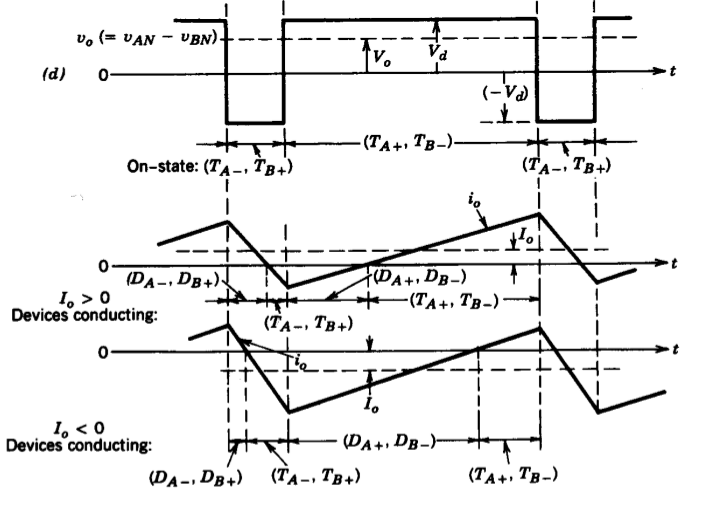
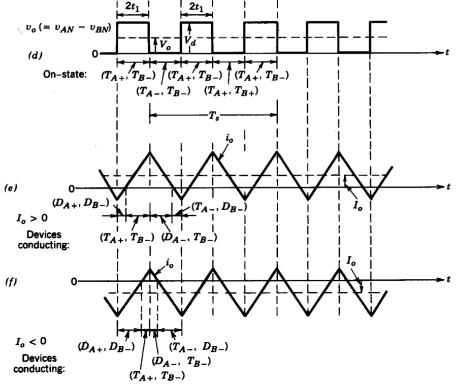

class: center, middle # EE-464 STATIC POWER CONVERSION-II # DC/DC Converters Continued ## Ozan Keysan ## [keysan.me](http://keysan.me) ### Office: C-113 <span class="meta">•</span> Tel: 210 7586 --- <img src="http://000ewev.myregisteredwp.com/wp-content/uploads/sites/2658/2016/07/bio-pic-01-243x300.jpg" alt="Drawing" style="width: 300px;"/> -- ## [Slobodan Ćuk](http://teslaco.com/) ### [Linked-in profile](https://www.linkedin.com/in/slobodancuk/) --- ## Ćuk converter -- <img src="http://www.wiki-zero.com/index.php?q=aHR0cHM6Ly91cGxvYWQud2lraW1lZGlhLm9yZy93aWtpcGVkaWEvY29tbW9ucy90aHVtYi9jL2NhL0NvbW11dGF0aW9uX2NlbGxfaW5fY29udmVydGVycy5zdmcvMjUwcHgtQ29tbXV0YXRpb25fY2VsbF9pbl9jb252ZXJ0ZXJzLnN2Zy5wbmc" alt="Drawing" style="width: 300px;"/> --- # Ćuk converter <img src="./images/ee464/cuk_converter.png" alt="Drawing" style="width: 800px;"/> -- ### Supplies a negative voltage -- ### C1 is the primary energy storage elements -- ### C1 is chosen quite large (ripple is small) --- # Ćuk converter <img src="./images/ee464/cuk_converter.png" alt="Drawing" style="width: 800px;"/> ## Can you plot the on & off states? --- ## ON State <img src="./images/ee464/cuk_on.png" alt="Drawing" style="width: 600px;"/> -- ### Diode off (reverse biased by C1) -- ### \\(i\_{L1}\\) and \\(i\_{L2}\\) passes through T1 -- ### C1 discharges through T1 (\\(V\_{C1}>V\_{o}\\)) --- ## OFF State <img src="./images/ee464/cuk_off.png" alt="Drawing" style="width: 600px;"/> -- ### Diode on -- ### \\(i\_{L1}\\) decreases (\\(V\_{C1}>V\_{d}\\)) -- ### C1 charges through D1 (from input and L1) --- ## Operating States <img src="./images/ee464/cuk_inductor_voltage.png" alt="Drawing" style="width: 500px;"/> --- ## Operating States <img src="./images/ee464/cuk_inductor_current.png" alt="Drawing" style="width: 450px;"/> --- # Ćuk converter #\\(V_o = \dfrac{D}{(1-D)} V_d\\) ## It is a buck-boost converter! --- # [Input/Output Ripple](https://www.eetimes.com/document.asp?doc_id=1273276&page_number=1)? <img src="https://m.eet.com/media/1055270/Figure_1.jpg" alt="Drawing" style="width: 450px;"/> --- # Ćuk converter <img src="./images/ee464/cuk_converter.png" alt="Drawing" style="width: 800px;"/> ## Double ended: Inductors placed at both the input and the output --- # Ćuk converter ## Advantages: - ## Both input and output currents are ripple free (fed through inductors) -- - ## Lower filtering requirements -- - ## Constant source current --- # Ćuk converter ## Disadvantages: -- - ## Capacitor(C1) is quite bulky -- - ## Capacitor (C1) should have a large ripple current rating -- - ## Complex circuit --- # Example ## Mohan Exercise 7-3 --- # Isolated Ćuk converter <img src="http://www.wiki-zero.com/index.php?q=aHR0cHM6Ly91cGxvYWQud2lraW1lZGlhLm9yZy93aWtpcGVkaWEvY29tbW9ucy9kL2QzL0lzb2xhdGVkLWN1ay1jb252ZXJ0ZXIucG5n" alt="Drawing" style="width: 800px;"/> --- # SEPIC Converter -- ## Single Ended Primary Inductor Converter -- <img src="http://www.ridleyengineering.com/images/SPM/02/article2_01.jpg" alt="Drawing" style="width: 800px;"/> -- ### Essentially a boost converter cascaded wi th a buck-boost converter --- # SEPIC Converter <img src="http://www.ridleyengineering.com/images/SPM/02/article2_01.jpg" alt="Drawing" style="width: 600px;"/> ### Popular in battery powered systems (voltage level can be adjusted according to charge level) -- ### Possible to shutdown completely (when the switch is off) --- ## [Operating Modes](http://www.all-electronics.de/wp-content/uploads/migrated/document/114418/502ag0207.pdf): <img src="./images/ee464/sepic_operation.png" alt="Drawing" style="width: 800px;"> --- ## [Operating Modes](http://www.all-electronics.de/wp-content/uploads/migrated/document/114418/502ag0207.pdf): ON State <img src="./images/ee464/sepic_on.png" alt="Drawing" style="width: 800px;"> ## \\(v\_{L1}=Vs\\) --- ## [Operating Modes](http://www.all-electronics.de/wp-content/uploads/migrated/document/114418/502ag0207.pdf): OFF State <img src="./images/ee464/sepic_off.png" alt="Drawing" style="width: 800px;"> ## \\(-V\_s + v\_{L1} + v\_{C1} + V\_{o}=0\\) -- ## If \\( v\_{C1} =V\_{s} \\) then \\(v\_{L1} = -V\_{o}\\) --- ## [Operating Modes](http://www.all-electronics.de/wp-content/uploads/migrated/document/114418/502ag0207.pdf): Currents <img src="./images/ee464/sepic_current.png" alt="Drawing" style="width: 700px;"> --- # Example (Handout) --- # SEPIC With Mutually Coupled Inductors <img src="./images/ee464/sepic_coupled_inductor.png" alt="Drawing" style="width: 700px;"> --- # SEPIC Converter -- ## Advantages: - ### Non-inverting buck-boost converter -- - ### Energy Efficient (can be completely turned-off) --- ## Disadvantages: - ### Pulsating output current -- - ### Large capacitance (and large ripple current rating) -- - ### Fourth order nature od converter, difficult to control - ### Energy Efficient (can be completely turned-off) --- # SEPIC Converter -- ## Inductors can be combined is a single core (coupled inductors) ## Lower required inductance, and size ## Minimize oscillation in the circuit (more on that later) --- # Interleaved Converters -- ## Interleaved Buck Converter -- <img src="./images/ee464/interleaved_buck.png" alt="Drawing" style="width: 700px;"> --- # Interleaved Converters ## Interleaved Buck Converter <img src="./images/ee464/interleaved_buck2.png" alt="Drawing" style="width: 700px;"> --- # Interleaved Converters ## Interleaved Boost Converter <img src="./images/ee464/interleaved_boost.png" alt="Drawing" style="width: 700px;"> --- # Reading Assignments - ### [MATLAB Topology Comparison](https://www.mathworks.com/matlabcentral/fileexchange/60167-dc-to-dc--buck-boost-buck-boost-sepic-cuk--converters?s_tid=gn_loc_drop) - ### [Application Note: Designing A SEPIC Converter](http://www.all-electronics.de/wp-content/uploads/migrated/document/114418/502ag0207.pdf) - ### [Sepic and Ćuk Converters](http://www.idc-online.com/technical_references/pdfs/electrical_engineering/C_uK_and_Sepic_Converter.pdf) - ### [Sepic Converter Basics](https://www.youtube.com/watch?v=m5OG_3-sbCs) - ### [Power supply topology: SEPIC vs Flyback](https://www.electronicsweekly.com/news/products/analog/power-supply-topology-sepic-vs-flyback-2005-11/) --- # Multi Quadrant DC Converters --- <img src="http://nptel.ac.in/courses/108103009/module4/lec11/images/x1.JPG" alt="Drawing" style="width: 800px;"> --- # First Quadrant Converter -- ### (Type A Chopper) <img src="https://www.electrical4u.com/images/type-a-chopper.png" alt="Drawing" style="width: 600px;"> --- # Second Quadrant Converter -- ### (Type B Chopper) <img src="https://www.electrical4u.com/images/type-b-chopper.png" alt="Drawing" style="width: 600px;"> ### Io:negative --- # Two Quadrant Converter -- ### (Type C Chopper) <img src="https://www.electrical4u.com/images/type-c-chopper.png" alt="Drawing" style="width: 400px;"> ### Io:negative --- # First and Fourth Quadrant Converter? -- <img src="./images/ee464/first_fourth_quadrant.png" alt="Drawing" style="width: 700px;"> --- # Full-Bridge (Four Quadrant) DC-DC Converter -- <img src="./images/ee464/full_bridge_dc_dc.png" alt="Drawing" style="width: 700px;"> ## Suitable for four quadrant operation --- # Control of Full-Bridge Converter -- - ## Bi-polar Voltage Switching -- - ## Uni-polar Voltage Switching --- # Bi-polar Voltage Switching ### \\(T\_{A+}\\) and \\(T\_{B-}\\) are turn on and off together -- ### \\(T\_{A-}\\) and \\(T\_{B+}\\) are complimetary of \\(T\_{A+}\\) and \\(T\_{B-}\\) -- ## Can give \\(V\_d\\) or \\(-V\_d\\) --- # Bi-polar Voltage Switching <img src="./images/ee464/bipolar1.png" alt="Drawing" style="width: 600px;"> --- # Bi-polar Voltage Switching <img src="./images/ee464/bipolar2.png" alt="Drawing" style="width: 700px;"> --- # Bi-polar Voltage Switching  --- # Uni-polar Voltage Switching ### \\(T\_{A+}\\) and \\(T\_{B+}\\) are controlled seperately ### \\(T\_{A-}\\) and \\(T\_{B-}\\) are complimetary of \\(T\_{A+}\\) and \\(T\_{B+}\\) -- ## Can give \\(V\_d\\), \\(0\\), \\(-V\_d\\) ## \\(V\_o = 0 \\) if \\(T\_{A+}\\) and \\(T\_{B+}\\) are ON ## \\(V\_o = 0 \\) if \\(T\_{A-}\\) and \\(T\_{B-}\\) are ON --- # Uni-polar Voltage Switching <img src="./images/ee464/unipolar1.png" alt="Drawing" style="width: 700px;"> --- # Uni-polar Voltage Switching <img src="./images/ee464/unipolar2.png" alt="Drawing" style="width: 700px;"> --- # Uni-polar Voltage Switching  --- ## You can download this presentation from: [keysan.me/ee464](http://keysan.me/ee464)